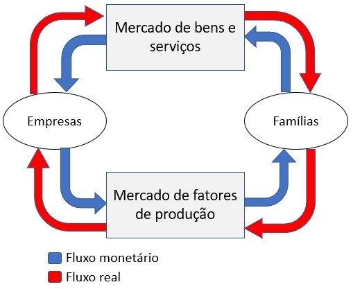

A economia é a ciência social que estuda a situação econômica da sociedade e seus desdobramentos. O ponto de estudo no qual a economia se baseia, envolve principalmente a questão das necessidades humanas. As quais podem ser naturais, como comer, ou sociais, como uma festa de casamento. Existem ainda as necessidades da sociedade, que partem do indivíduo para o todo, como o meio de transporte por exemplo. Sabendo disso, o problema principal que a economia tenta resolver, é administrar os recursos escassos do planeta com as necessidades ilimitadas do ser humano e da sociedade. “Administrar a utilização de recursos disponíveis de forma racional (eficiência) para maximizar a satisfação da sociedade (eficácia).
Capitalismo: Divisão de trabalho entre os possuidores de capital, que contratam a mão-de-obra e os que vendem sua mão-de-obra. Caracterizado pela não intervenção do Estado na economia e o direito à propriedade privada dos meios de produção. Comunismo: Não existência do Estado ou de classes sociais, propriedades privadas e funções sociais atribuídas pela sociedade civil e comunidade de produtores. Socialismo: Não existência de meios de produção privados, coordenados por um governo central e todos pertencidos pela coletividade. Sem diferença entre classes sociais e a distribuição de bens e serviços é determinada pelo Estado.
Com a problemática da escassez dos recursos, surgem as seguintes questões: quais produtos devem ser produzidos, como serão produzidos e para quem essa produção será destinada. Por isso, os agentes econômicos devem dinamizar a eficiência (maximizar emprego dos recursos) e a eficácia (otimizar as escolhas). Esses fatores determinarão os esforços direcionados para bens econômicos (úteis, escassos e transferíveis).
1 – Fluxo real da economia: As empresas demandam fatores de produção, que são ofertados pelos indivíduos. Os quais demandam bens e serviços, ofertados pelas empresas. 2 – Fluxo monetário da economia: os indivíduos consumidores pagam pelos bens e serviços, enquanto as empresas remuneram os fatores de produção e indivíduos. Com a união do fluxo real e monetário, temos o fluxo circular de renda. 3 – Fluxo circular de renda: A dinâmica com a qual as movimentações econômicas ocorrem na sociedade com todos os agentes econômicos se relacionando através do fluxo real e monetário. Ocorrendo o ciclo da interação entre indivíduos, empresas, bens e serviços e fatores de produção. Fornecimento de renda pelas empresas em troca do trabalho utilizado para comprar seus próprios bens e serviços. Existe também a divisão dos bens movimentados pelo fluxo circular: Bens de capital: são utilizados na fabricação de outros bens, sem desgaste total no processo. Ex: máquinas, equipamentos, etc. Bens de consumo: buscam atender as necessidades humanas, podendo ser duráveis (geladeira) ou não-duráveis (alimentos). Bens intermediários: são transformados e agregados na produção de outros bens, sendo consumidos no processo produtivo. Fatores de produção: recursos humanos, terra, capital e tecnologia. E diante da análise e estudo da economia, temos o particionamento entre microeconomia que ilustra a formação de preços em mercados específicos, a macroeconomia determinando o comportamento de grandes agregados nacionais. A economia internacional que analisa relações econômicas dentro e fora de determinado país e o desenvolvimento econômico que se atenta ao padrão de vida coletivo.
Economia e história: condicionado a permanente evolução histórica das civilizações, a interdependência se dá com as informações de localização, tempo e espaço das atividades humanas e organicidade da evolução dos fatos Economia e geografia: Instituições econômicas e formas de organizar a produção divergem de país para país, dependendo até mesmo de regiões dentro de um mesmo país. Análise das condições geoeconômicas dos mercados regionais, distribuição espacial dos fatores produtivos. Métodos regionais de produção, intercâmbio, comunicações e a organização da infraestrutura de unidades produtivas. Economia e o direito: Economia depende da estrutura jurídica do sistema e bases institucionais. Principalmente pela lei jurídica situar o indivíduo, a empresa e a sociedade diante do poder político com a definição de obrigações e responsabilidades. Isso limita como cada agente econômico realizará suas ações. Economia e métodos quantitativos: Quantifica os fenômenos que a economia engloba desenvolvendo a econometria. Análise das relações macro ou específicas acompanhada de previsões mais completas de acordo com esses indicadores. Impulsionando os métodos quantitativos de investigação.
Concorrência perfeita: não existe em uma situação real, pode apenas ser aproximada. Conta com mercado diversificado e diversas empresas sendo que nenhuma delas controla ou dita o preço do mercado como um todo. Ocorre transparência de mercado sobre lucros e preços com toda a sociedade e a não existência de uma barreira de entrada no mercado. Nenhuma regra delimita o fluxo econômico além da lei da oferta e demanda. Monopólio: Uma única empresa detém o mercado e dita o preço de algum ramo de produto ou serviço específico, como a Petrobras no Brasil. Oligopólio: Um grupo pequeno de empresas controla o mercado de algum nicho. Um bom exemplo seria como as empresas aéreas GOL e LATAM no Brasil. Dentro do oligopólio existem diferentes tipos de controle com conglomerados econômicos, dentre elas a holding (empresa que adquire ações de uma outra e passa a administrá-la), truste (empresa que adquire completamente a posse de seus concorrentes e comanda o mercado) e cartel (empresas do mesmo nicho que acordam preços e ofertas entre si para prejudicar a concorrência). Concorrência monopolística: Estrutura que se aproxima mais da realidade como um intermediário entre a concorrência perfeita e oligopólio. Bens diferentes são produzidos por grande número de empresas que possuem concorrentes e substitutos inerentes. Cada empresa tenta diferenciar seu produto do restante funcionando como um pequeno monopólio com características particulares. Essas características definem as várias preferências dos consumidores.
“A procura de determinado produto é determinada pela quantidade que os consumidores estão dispostos e aptos a adquirir, em função de vários níveis possíveis de preços em dado período de tempo.” Então os principais elementos que podem influenciar a demanda do consumidor se baseiam no preço do produto que sempre é influenciado pelo salário do consumidor e sua renda. Dentre os bens que são afetados por essa questão da demanda estão presentes os bens normais, que o aumento da renda representa aumento no seu consumo (eletrodomésticos, roupas, acessórios, etc.). Já os bens inferiores possuem a demanda reduzida quando a renda do consumidor aumenta e vice-versa, pois acabam sendo substituídos, um exemplo seria carne de segunda mão. Agora os bens de consumo saciado não têm o consumo alterado com o aumento de renda pois satisfazem o consumidor totalmente a partir de determinado nível de renda, como exemplo o sal e a farinha. Os bens complementares geralmente são mais consumidos junto de outro, como o pão e a manteiga. Os bens substitutos resumem quando um substitui o outro e o aumento do preço de determinado produto aumenta a demanda de algum outro, como a manteiga e margarina. Vale lembrar que a demanda por determinado bem pode sempre estar sujeita ao cotidiano e preferências do consumidor, e ambas variam em questões de sexo, cultura, religião e educação.
A quantidade de produtos que as empresas oferecem no mercado de acordo com as limitações de capital, terra, tecnologia, trabalho e capacidade empresarial
Controla o mercado baseado na dinâmica entre as citadas oferta e procura com os diferentes pontos influenciadores. Os cientistas costumam utilizar como objeto de estudo ideal a condição “Ceteris Paribus” que significa que todo o resto se mantém inalterado e em constância. Analisa os fatores em determinado período os quais possam afetar o preço, e descarta as variáveis que não o alteram. Isso é útil na condição de avaliar uma variável específica desconsiderando as demais em uma hipótese controlada. Essa condição também ilustra a relação inversamente proporcional entre quantidade demandada e preço do bem. Ressaltando que após visto as condições de demanda dos consumidores, as empresas condicionam os bens com outros fatores como complexidade de produção, tempo e a escassez para ambos os lados. Ponto de equilíbrio do mercado: Existe no âmbito exato em que a quantidade de consumidores que desejam comprar é idêntica à quantidade que os produtores desejam vender. A falta ou sobreposição não existe nem do lado da oferta nem da demanda.
Bens de Giffen: Bens de custo baixo mas imprescindíveis aos consumidores de menor renda, quando seus preços abaixam ocorre o paradoxo da queda de sua demanda. Por exemplo: ônibus mais barato passando sensação de maior poder aquisitivo pode fazer com que colegas de trabalho dividam o preço do uber. Bens de Veblen: Bens que possuem serventia de ostentar, de serem exclusivos e inacessíveis à maioria. Como obras de arte, peças de roupa únicas ou joias de luxo. A demanda aumenta com o aumento do preço.
O ser humano já utilizou algumas formas de quantificação de trocas para bens como o escambo que consistia na troca direta da mercadoria e permuta sem quantificação do valor. A moeda-mercadoria, que alguns produtos baseados em sua utilidade passaram a ter mais procura, porém ainda com o problema de serem perecíveis impossibilitando o acúmulo consistente de riquezas. A moeda: objeto em consenso na sociedade para quantificar trocas e pagar bens ou serviços, que na sociedade atual sua aceitação é forçada. Suas diferentes funções passam por ser o intermediário de trocas econômicas, uma unidade de medida geral para atribuir o valor aos diferentes bens contando com comparação entre eles. A moeda também permite o acúmulo de valor líquido, podendo ser utilizada para obter algum bem no futuro. Com a regularização da moeda no mundo moderno, cabe aos bancos centrais garantirem a execução da política da moeda, emitirem as moedas, controlar a oferta da moeda, administrar o câmbio e fiscalizar as instituições financeiras. De acordo com a política monetária existe o conceito de lastro, refletindo o valor da moeda, podendo ser convertida nesse lastro. Menos utilizado hoje em dia, o exemplo maior é o ouro. O exemplo mais atual de reserva seria a internacional em forma do dólar, podendo ser utilizado em transações externas.
Conceito econômico que ilustra o aumento generalizado e contínuo dos preços de bens e serviços de um país. Isso em resumo acarreta a desvalorização da moeda nacional devido a perca do poder de compra com a mesma quantidade de dinheiro. E os preços dos bens e serviços podem subir devido a vários fatores, como aumento de custo de produção em geral, aumento drástico da demanda e fatores econômicos como alta emissão da moeda. A inflação sempre diminui a condição de compra da população nacional com os mesmos salários, os produtos acabam variando muito de preço e tendo várias altas seguidas. Tudo isso limita o planejamento das famílias, indivíduos e empresas como no âmbito geral. Isso ressalta um grande problema decorrente que é a falta de confiança interna e externa com relação a investimentos no determinado país com alta inflação. Que acabam preferindo fontes seguras de armazenar dinheiro como o dólar, diminuindo gastos e a circulação monetária do país, causando também o desemprego por falta de demanda pelos serviços ou produtos.
Produto Interno Bruto: Soma de todas as riquezas produzidas em um país durante determinado período, considerando tanto empresas nacionais como internacionais desde que estejam alocadas no país. Renda Per Capta: Valor dado a um país ou região, calculado pelo Produto Nacional Bruto (PNB) e sua divisão entre a população de dada localização. O PNB consiste em todo dinheiro que entra e é produzido, subtraído pelo dinheiro que saiu da região. Por englobar fatores tão grandes, a renda per capta não deve ser o único fator a ser levado em conta na análise de distribuição de renda da população. Acaba generalizando e situações específicas de renda podem ser ocultadas. Índice de desenvolvimento humano (IDH): Avalia e indica a qualidade de vida dos países de acordo com métricas de itens sujeitos a avaliação no contexto geral. Esses pontos variam entre expectativa de vida com qualidade, e acesso à educação e rendimentos. Os pontos específicos que garantem esses parâmetros permeiam serviço de saúde eficaz, educação de qualidade e renda suficiente para suportar as características necessárias para uma boa qualidade de vida. Educação: Fonte na qual o indivíduo é formado desde o ambiente familiar ao escolar e demais experiências no decorrer da vida, que deve ser capaz de amparar o cidadão a observar, compreender e produzir ações dentro do seu contexto social de forme que molde sua condição e dos demais habitantes para melhor. Taxa de Desemprego: Indivíduos não possuem atividades rentáveis, ocorrendo principalmente em países subdesenvolvidos em taxas maiores devido à baixa capacidade de crescimento econômico. Causas que aumentam essa taxa incluem a substituição do trabalho humano pelo tecnológico, falta de estrutura para diversificação de trabalhos e baixos investimentos no país gerando baixas remunerações para uma alta inflação. Oferta de serviços públicos: Condiciona o nível de qualidade de vida público geral dependendo da estrutura fornecida, como saneamento básico, iluminação pública, manutenções estruturais, etc. Coeficiente De Gini: Representa a desigualdade de distribuição de renda do país do 0 ao 1, onde zero ilustra um país totalmente igual e um o país totalmente desigual. Calcula a distribuição geral podendo ser comparada por território, inclusive rural e urbano. Apesar disso, essa métrica é estática e não contabiliza as oportunidades.
Modelo Linear: Altos níveis de desperdício na produção com perda econômica e ambiental com a extração de recursos, produção de bens, consumo e descarte de resíduos. Modelo Circular: Promove a reutilização e reciclagem de materiais, tentando acabar a ineficiência fazendo uma melhor gestão dos recursos naturais.
Resenha baseada no livro “Alguns aspectos do uso da informação na economia da informação”: Como na atualidade existe uma alta taxa de reprodução das informações, a maior preocupação deve ser em como elas são tratadas, obtidas, distribuídas e utilizadas. A nova forma de fazer negócios baseia-se nas organizações pautadas na informação, utilizando-a para obter vantagem competitiva no mercado. Sendo um “ativo” ou “suporte de decisão”, a informação pode analisar comportamento de mercado, controlar estoques, melhorar a efetividade das vendas, etc. Uma das principais vantagens vindas da informação é a redução de custos, por meio da automatização de cálculos e análises internas e externas (por exemplo calcular a necessidade exata de alguma matéria prima) e a diminuição dos gastos físicos por meio de serviços via Internet. Sintetizando, os principais redutores de custo trabalham com o ambiente da informação para produzir mais com menos, levando preços menores ao cliente final. As informações da parte empresarial e dos fornecedores são importantes para administrar a parte logística, com uma cadeia de informações entre os dois, já o cliente fornece suas preferências sobre determinados produtos. O valor se dá pelo montante que os consumidores se dispõem a pagar por algum produto, que quando ultrapassa o custo se transforma em lucro. Mas a criação de valor se acumula por meio de diversos fatores e agentes, não dependendo somente da empresa. Por isso a informação utilizada da maneira correta consegue conectar e amplificar todos esses fatores para trabalharem em conjunto na criação de valor. A sincronização de informações é chave para que todos os conjuntos desse ambiente econômico sejam extraídos de forma vantajosa para a organização em busca de valor. A Internet e sistemas de informação utilizados formam ferramentas importantes no quesito satisfação do cliente e análise dos dados funcionais, pois com a grande circulação de dados sobre diversas empresas e usuários, os melhores aproveitadores dessas informações construirão lealdade com a clientela. A interconectividade e a economia estão fortemente ligados às redes nas quais distribuem, armazenam e criam informações e a Internet é uma rede cuja suas informações conseguem ser muito bem aproveitadas, gerando alto valor. As conexões e utilização correta da arquitetura da rede trazem o sucesso empresarial esperado, quando a filtragem das informações concilia a cadeia de capacidades da organização, seus subsistemas, capacidade de proposição de valor e contribuições tecnológicas para o produto final. As empresas que melhor aproveitarem o fluxo de informações na Internet conseguirão inovar mais facilmente, aspecto importante em meio a tanta mudança informacional. Os fatores de experiência de usuário e tráfego de informação colaboram com o desenvolvimento de um projeto, pois com o feedback dos clientes, eles ajudam a adaptar o sistema que os mesmos vão utilizar. Essa aprendizagem colaborativa fomenta inovações mais úteis. A administração da informação também reduz os riscos quando uma empresa sofre mudanças na zona de conforto, ainda mais agora com diversas organizações dependentes de sistemas online suscetíveis a ataques e vazamentos. As mesmas com o foco de prevenção devem realizar: controle de desenvolvimento dos sistemas, treinamento dos usuários referente a segurança, segurança física, controle de acesso de dados, transações, auditorias de sistema e planos emergenciais. A economia de informação muda o aspecto de valor físico, trazendo consigo o valor virtual. A internet cria um novo ambiente econômico vital para as empresas, com espaço de informação, comunicação, distribuição e transação virtual. Algumas empresas têm se beneficiado desse ambiente com a possibilidade de transferir a maioria das decisões para o cliente, podendo acessar o âmbito empresarial em qualquer lugar, horário e sem depender de interações físicas. Essas inovações virtuais caminham junto da informação utilizada nesses processos, em que ela deixa de ser um suporte e passa a ser o principal ativo definindo o conteúdo, contexto e infraestrutura online. O controle de valor na cadeia virtual requer coleta, organização, seleção, síntese e distribuição da informação, trabalhando para migrar os valores vistos pelo cliente à um meio digital. A interação com o cliente, configuração do ativo e conhecimento adaptaram o modelo de negócio corretamente para a virtualização. A análise das informações nesse contexto também auxilia a diferenciação do produto, pois começa a depender da relação do mesmo com as novas redes e tecnologias embarcadas. Então o uso das informações pelas empresas busca a redução de custos, criação de valor, inovação, redução do risco, virtualização e diferenciação do produto.